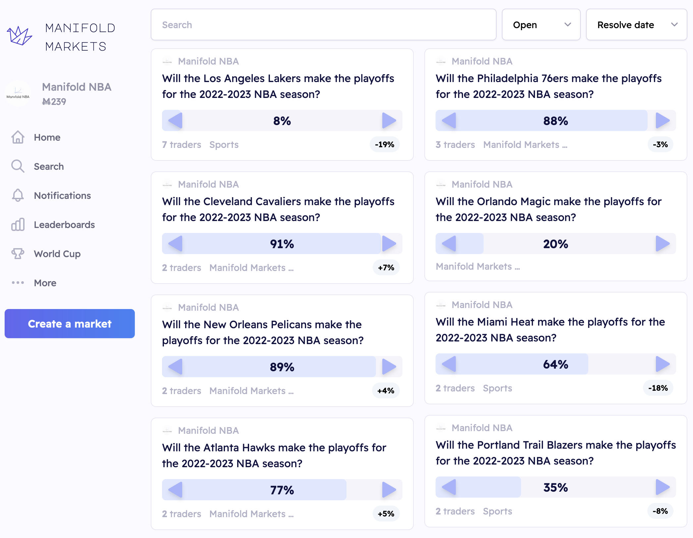

I recently wrote an R wrapper for an online prediction market’s API.
Why?
- After stumbling upon the platform, I was interested in finding an easier way to exploit potential market inefficiencies programmatically
- It had been a while since I’d written code for an R package and I wanted to refresh my memory
Manifold Markets
The prediction market is called Manifold Markets. Manifold has been described as a “play-money prediction market platform where you can bet on anything,” an “experiment for enabling effective forecasters to direct altruistic donations,” and “like Wikipedia for things that nobody knows yet but will be observable later.” It’s something like PredictIt without real money. The platform is still pretty new and the community is still pretty small, but it’s worth checking out.
My contribution
The wrapper is called manifoldr. Building the wrapper involved mapping the API’s HTTP-based interface into R functions. It required careful parsing of the API’s responses and ensuring that each function performed its corresponding API request effectively. This involved considerable error checking and handling to ensure robustness. It provides a fairly straightforward way to make API calls to Manifold via R functions. The main package function is manifold_api(), from which all of the API endpoints can be accessed successfully as of November 2022.
For example, we can retrieve user information by their unique username (in this case, the official account @ManifoldMarkets).
A number of convenience functions are also provided. These include functions which correspond to specific endpoints along with others such as clean_manifold_content(), which will return output as a data frame with clean variable names. Users can also authenticate with the platform using manifoldr::get_manifold_api_key().
The package includes implementations of standard unit testing and code coverage tools using covr, testthat, and Github Actions.
Illustration
To demonstrate the package tools, I made a new account on the platform called “Manifold NBA” and programmatically set up prediction markets for all 30 American professional basketball teams’ playoff odds. Feel free to check those out here.

Feedback
The API is still in alpha, so I haven’t built out convenience functions for every endpoint yet. I do plan to continue maintaining and updating the package though, so if you have any suggestions or feedback, please let me know in the comment section below or by opening up an issue inside the package repository.
Resources
Finally, I’ve made a short list of resources that were helpful to me while I worked on this.
- A vignette on “Best practices for API packages” found in the
httrpackage documentation - Hadley Wickham and Jenny Bryan’s comprehensive “R Packages”
- Another vignette from
httron secret management, which was necessary in order to implement unit testing for endpoints that require authentication